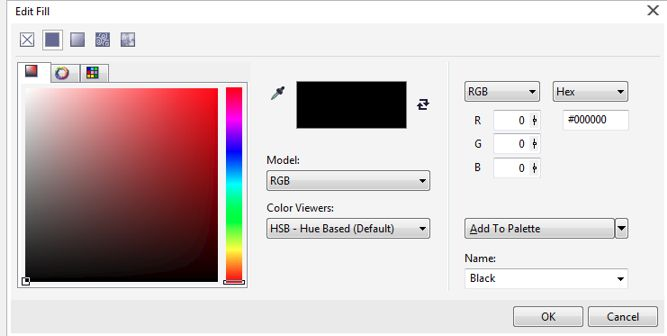

Первый взгляд на Corel Photo-Paint X7
В мои «цепкие лапы» попала новая версия пакета CorelDraw Graphics Suit X7, с выходом которого, всех поклонников этого продукта поздравляю. Я давно ничего не писал, т. к. у нас в Украине «немного штормит» и было не до написаний уроков или чего-нибудь подобного.
Я также в свое время обошел вниманием выход CorelDraw Graphics Suit X6, но сейчас попробую в ряде уроков (хотя, может нужно было в другом разделе выложить обзор) рассказать о первых впечатлениях от новой версии.
Сразу оговорюсь, что новая версия проверялась на 2-х разных компьютерах и на 3-х разных ОС, Windows 7 SP1 Ultimate и Professional (64-bit) и Windows 8 (64-bit). Ну, что можно сказать, на одном из компьютеров (с Windows 7 Ultimate SP1 (64-bit)) скорость запуска и работы приложения оставила желать лучшего, но очевидно, что сам пакет в этом не виноват. Компьютер был «маленько захламлен» всякой всячиной и по теперешним меркам, не самый «продвинутый». На другом компьютере стаяло 2 ОС, Windows 7 Professional SP1(64-bit) и Windows 8 (64-bit). Тут все прошло без проблем. Порадовала скорость запуска и работы Corel Photo-Paint X7.
Но, без маленьких сюрпризов, как всегда не обходится. При запуске программы, Corel с завидным постоянством показывает окно с предложением на чего-нибудь подписаться (рис. 1), что в случае с одним из компьютеров было не возможно из-за отсутствия подключения к интернету.
А сюрприз заключался в том, что в двух случаях из 3-х, флажок Don’t show again (Больше не показывать) (обведен на рисунке красным овалом) не появлялся в этом диалоговом окне. И при каждом запуске это окно появлялось снова. Правда, потом все-таки, после третьего или четвертого запуска Corel Photo-Paint X7, этот флажок наконец появился и стало возможным отключить это надоедающее окно.
Ну, и наконец, долгожданное открытие окна приложения… При первом запуске (впервые), бросается в глаза общий вид окна приложения, «заточенный» в стиле Windows 8. И что также стало приятным сюрпризом, окно Welcome Screen (Окно приветствия) стало более дружелюбным и удобным для пользователя. Это окно, в отличие от предыдущих версий (Х5 и Х6 точно), раскрывается сразу на весь экран (рис. 2).
Здесь также появилось, на мой взгляд, одно из полезных усовершенствований – возможность изменять размер значков (шрифта, например) этого окна. Для этого, в верхнем правом углу окна имеется две буквы «А». Понятно, что щелчок на большей букве увеличивает размер, а щелчок на меньшей уменьшает. Раздел Get Started (Начало работы), также порадовал неплохой «вкусностью» при выборе пункта Open Recent (Открыть недавние документы). В области просмотра (в правой части Окна приветствия) лучше видно открываемое изображение, оно большего размера и что иногда немало важно – полностью виден путь к открываемому файлу. Также должен отметить, что при работе на старом добром 19-ти дюймовом мониторе, сказывается некоторая нехватка жизненного пространства (разрешение 1024 х 768). Но зато дома, на своем 27-ми дюймовом мониторе, получил «весь спектр удовольствий».
Вообще, для тех, кто только начинает знакомиться не только с пакетом CorelDraw Graphics Suit X7, но и с CorelDraw Graphics Suit в целом, советую не пренебрегать окном Welcome Screen (Окном приветствия) и познакомиться с ним ближе. Это хотя и мелочь, но приятная. Ну, а для тех, кто на дух не переносит подобных окон, предназначен флажок Always show the Welcome screen at launch (Всегда показывать Окно приветствия при запуске). Его в этом случае нужно сбросить.
Следующее приятное нововведение – организация открытых файлов в виде вкладок, в верхней части рабочей области. Конечно, вариант – Ctrl + Tab никто не отменял, но мне лично эта новая возможность пришлась очень по вкусу. Это сделало намного более удобным переключение между открытыми изображениями, в случае, когда их больше двух, я не говорю, когда открыто их одновременно гораздо больше.
А вот при перетаскивании окна изображения возникло вначале небольшое замешательство. Т. к. весь интерфейс практически одинакового серого цвета, то я не сразу сообразил куда делась строка заголовка окна изображения. Раньше она хоть цветом отличалась и кнопки были соответствующие… Но оказалось, что достаточно потянуть область правее вкладки (это теперь служит строкой заголовка) или саму вкладку, как окно изображения открепляется и его можно, как и раньше буксировать в нужное место.
И хотя внешне, при первом взгляде, в Corel Photo-Paint X7 ничего сильно не поменялось, но некоторые «вкусности» обнаруживаются довольно быстро, даже при поверхностном знакомстве. В первую очередь, это коснулось возможности настройки Рабочего пространства (другими словами, интерфейса) под себя. Эта возможность стала более чем удобной. Возле каждой панели инструментов (точнее в конце каждой панели), расположена, кнопка Quick customize (Быстрая настройка), как правило, круглая со знаком «+» (рис. 3).
На рисунке 3 рассмотрен вариант такой кнопки на примере панели Toolbox (Набор инструментов). Эта кнопка находится внизу и обведена на рис. 3 кружком. Щелчок на кнопке Quick customize (Быстрая настройка) раскрывает список доступных инструментов. Здесь можно удалять или добавлять нужные инструменты, чтобы лишние не «путались под руками». Эта возможность дает быстро, не прибегая к открытию диалогового окна Options (Параметры), настроить Рабочее пространство под конкретные нужды.
Но и тут не обошлось без маленьких недоразумений. В предыдущих версиях Corel Photo-Paint, всплывающие панели инструментов (Flyout), можно было беспрепятственно открепить от «родительской» (основной) панели инструментов. Я сейчас говорю о панели Toolbox (Набор инструментов). Теперь это мне сделать не удалось. Хотя возможно разработчики такую возможность и не предусматривали в новой версии, этого я не знаю.
Следующее маленькое изменение в интерфейсе коснулось непосредственно самой панели Toolbox (Набор инструментов). А именно, инструмент Mask Transform (Преобразование маски) приобрел «независимость» от инструмента Object Pick (Указатель объектов) и расположен теперь от него отдельно. Я пока не рассматриваю новых инструментов этой версии.
Также, на Панелях свойств некоторых инструментов, кнопка Apply changes (Применить изменения) приобрела новый вид, более понятный для пользователя. Теперь она вместо круглой красной безымянной кнопки, стала обычной кнопкой, с названием Apply (Применить).
Раз уж мы заговорили о Панелях свойств некоторых инструментов, то следует заметить, что на Панели свойств инструмента Mask Transform (Преобразование маски) появились новые кнопки, Expand mask (Расширить маску) и Contract mask (Уменьшить маску). Эти же кнопки были добавлены и на Панели свойств инструментов выделения.
Небольшое изменение претерпела Панель свойств инструмента Crop (Обрезка). Туда были добавлены две кнопки, которые соответствуют командам меню Image > Crop. Одна команда этого меню, Crop Overlay (Наложение обрезки) осталась без изменения, а вторая поменяла свое название с Expand (Расширить) на Expand Cropping Area (Расширить область обрезки), что более понятно для пользователя.
Было также добавлено удобство в инструмент Clone (Клонирование). Здесь увеличено удобство за счет изменения Панели свойств. Добавлена одна кнопка Pen pressure (Нажим пера), которая будет полезна при использовании планшета и исчезли с Панели свойств раскрывающиеся списки Brush type (Тип кисти) и Brush category (Категория кисти), а вместо них появился их аналог – Brush (Кисть), но более удобный и наглядный (рис. 4).
Аналогичное изменение произошло и с инструментами Effect (Эффект) и Paint (Кисть).
Довольно занятный элемент управления появился на Панелях свойств инструментов Fill (Заливка) и Interactive Fill (Интерактивная заливка) – Fill color (Цвет заливки), напоминающий докер Color (Цвет) в миниатюре (рис. 5).
Раз уж я заговорил о заливке, то необходимо сказать, что изменилась команда Edit > Fill (Правка > Залить), а точнее, при выполнении этой команды появляется диалоговое окно Edit Fill (Изменить заливку) (рис. 6), а не Edit Fill & Transparency (Изменение заливки и прозрачности), как в предыдущих версиях.

Это окно стало намного удобней в работе и более симпатичным, чем в предыдущих версиях. Раскрывающиеся списки перекочевали из нижней части окна в середину, что добавляет больше комфорта в работе, а само окно стало больше в размерах. Сейчас я не стану подробно останавливаться на этом окне. Об этом мы поговорим, когда ближе начнем знакомиться с новыми возможностями Corel Photo-Paint X7. Сейчас же «запишем пока это окно в список изменений в старых командах».
Теперь возникает вопрос, а куда подевалась вкладка Transparency (Прозрачность) из этого диалогового окна? Ответ очень простой. Все настройки этой вкладки перекочевали на Панель свойств инструмента Object Transparency (Прозрачность объекта). Само собой разумеется, что Панель свойств инструмента Object Transparency (Прозрачность объекта) претерпела в связи с этим изменения, а также добавились новые возможности в редактировании прозрачности.
Что касается других инструментов панели Toolbox (Набор инструментов), то бросающихся с первого взгляда изменений пока не нашел. Как я говорил, речь пока не шла о новых инструментах или новых возможностях.
Ну и пожалуй еще два визуально заметных изменения – замена названия докера Objects (Объекты) на Object Manager (Диспетчер объектов) и исчезновение двух пунктов из строки главного меню, Web и Movie (Фильм).
В следующем уроке рассмотрим новинки и усовершенствования в новой версии. Я не стал все размещать в одном уроке, решив сначала рассмотреть только те изменения, которые заметны практически сразу в Corel Photo-Paint X7.
Спасибо за урок.
Чтобы получить расширенный режим программы, для опытных пользователей, надо в окне приветствия (вкладка Workspace) выбрать классический интерфейс.
Мне больше всего понравилось что изображение открывается на всё окно сразу, раньше реально надоедало разворачивать окно документа.
Что интересно от версии к версии и никак не сделают чтобы интерфейс настраивался....Для глаз всётаки удобнее тёмный как например в продуктах Adobe